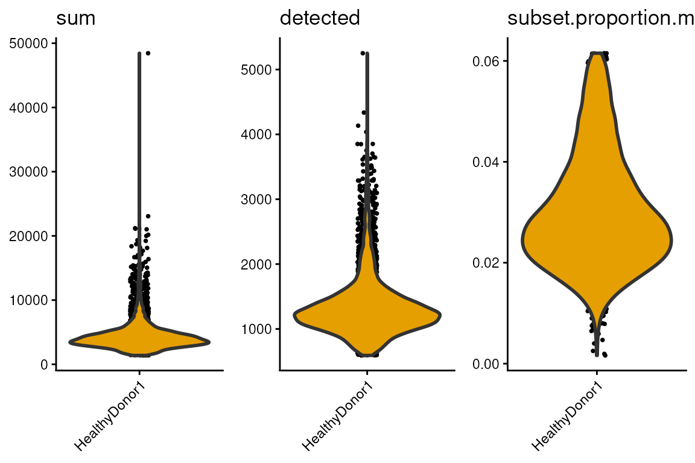
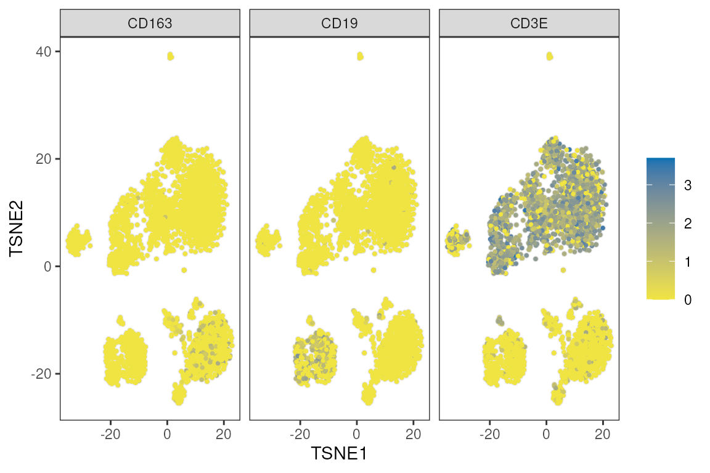
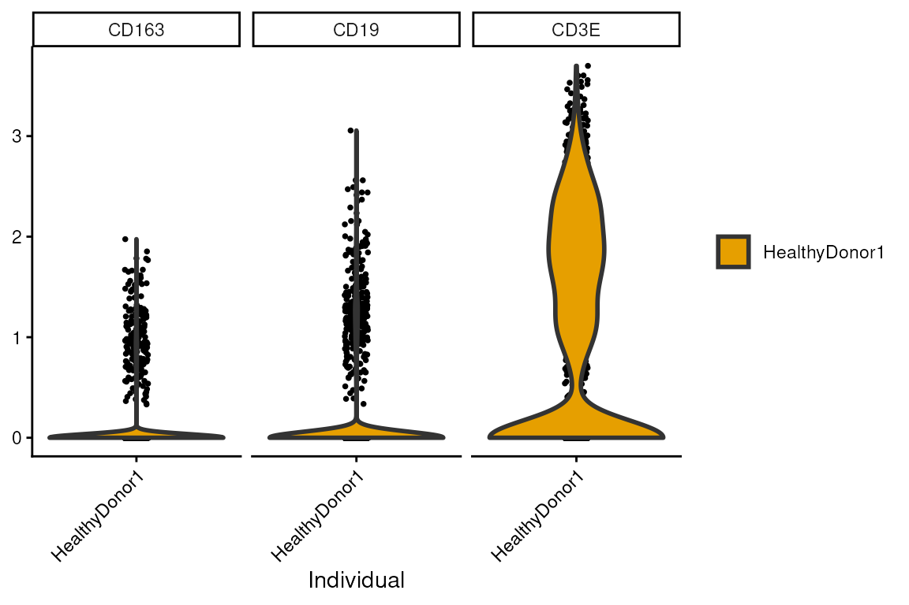
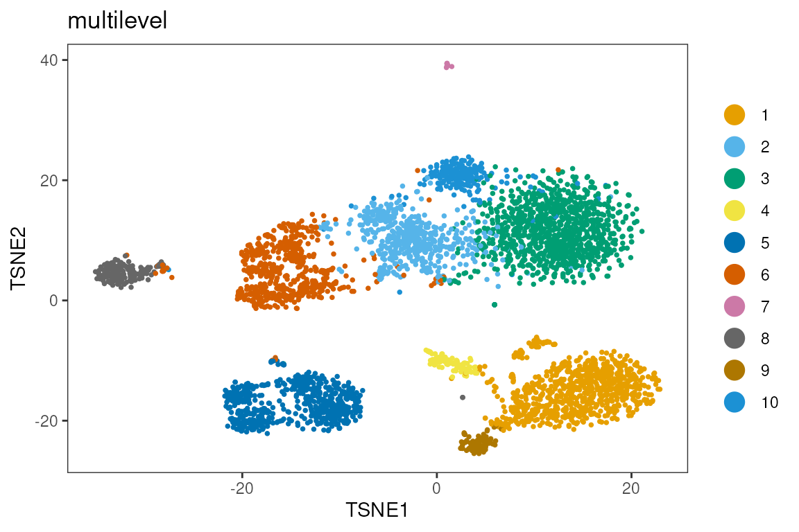
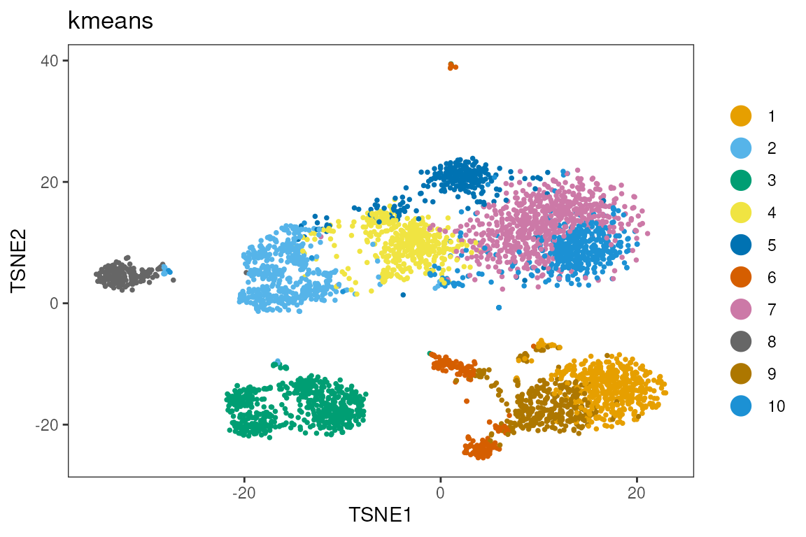
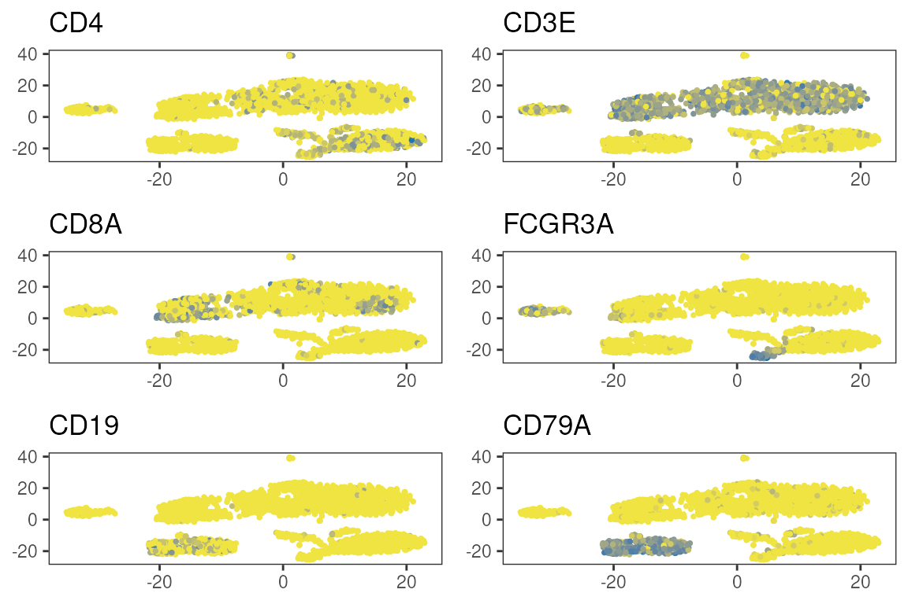
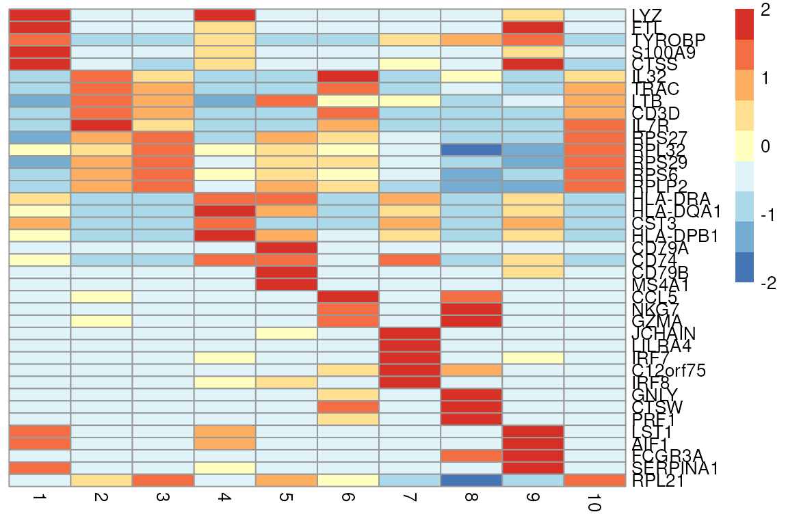
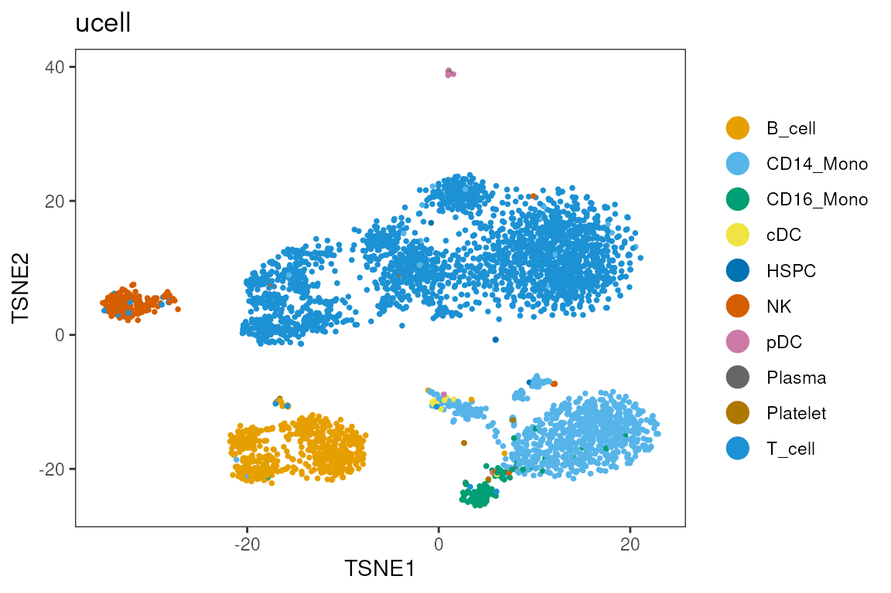

scRNA-seq single-sample analysis
Michael Lynch
School of Medicine, University of Limerickmichael.lynch@ul.ie Source:
vignettes/c_singlesample_workflow.Rmd
c_singlesample_workflow.Rmd
library(dittoSeq)
library(scuttle)
library(scater)
library(scran)
library(bluster)
library(TENxPBMCData)
library(scrapper)
library(mclust)Single-cell RNA-seq in Bioconductor
Data Loading
We begin by loading in a public dataset from the TENxPBMCData Bioconductor package. The dataset contains approx. 4,000 cells from peripheral blood mononuclear cells (PBMCs). These are mostly immune cells.
sce <- TENxPBMCData("pbmc4k")
#> see ?TENxPBMCData and browseVignettes('TENxPBMCData') for documentation
#> loading from cacheGenes can be labelled in multiple different ways, including Ensembl IDs and Gene Symbols. We also have some column (cell level) data that the authors included. We can confirm from the metadata that each cell came from the same person.
head(rowData(sce))
#> DataFrame with 6 rows and 3 columns
#> ENSEMBL_ID Symbol_TENx Symbol
#> <character> <character> <character>
#> ENSG00000243485 ENSG00000243485 RP11-34P13.3 NA
#> ENSG00000237613 ENSG00000237613 FAM138A FAM138A
#> ENSG00000186092 ENSG00000186092 OR4F5 OR4F5
#> ENSG00000238009 ENSG00000238009 RP11-34P13.7 LOC100996442
#> ENSG00000239945 ENSG00000239945 RP11-34P13.8 NA
#> ENSG00000239906 ENSG00000239906 RP11-34P13.14 NA
head(colData(sce))
#> DataFrame with 6 rows and 11 columns
#> Sample Barcode Sequence Library Cell_ranger_version
#> <character> <character> <character> <integer> <character>
#> 1 pbmc4k AAACCTGAGAAGGCCT-1 AAACCTGAGAAGGCCT 1 v2.1
#> 2 pbmc4k AAACCTGAGACAGACC-1 AAACCTGAGACAGACC 1 v2.1
#> 3 pbmc4k AAACCTGAGATAGTCA-1 AAACCTGAGATAGTCA 1 v2.1
#> 4 pbmc4k AAACCTGAGCGCCTCA-1 AAACCTGAGCGCCTCA 1 v2.1
#> 5 pbmc4k AAACCTGAGGCATGGT-1 AAACCTGAGGCATGGT 1 v2.1
#> 6 pbmc4k AAACCTGCAAGGTTCT-1 AAACCTGCAAGGTTCT 1 v2.1
#> Tissue_status Barcode_type Chemistry Sequence_platform Individual
#> <character> <character> <character> <character> <character>
#> 1 NA Chromium Chromium_v2 Hiseq4000 HealthyDonor1
#> 2 NA Chromium Chromium_v2 Hiseq4000 HealthyDonor1
#> 3 NA Chromium Chromium_v2 Hiseq4000 HealthyDonor1
#> 4 NA Chromium Chromium_v2 Hiseq4000 HealthyDonor1
#> 5 NA Chromium Chromium_v2 Hiseq4000 HealthyDonor1
#> 6 NA Chromium Chromium_v2 Hiseq4000 HealthyDonor1
#> Date_published
#> <character>
#> 1 2017-11-08
#> 2 2017-11-08
#> 3 2017-11-08
#> 4 2017-11-08
#> 5 2017-11-08
#> 6 2017-11-08
table(sce$Individual)
#>
#> HealthyDonor1
#> 4340The gene symbols are slightly more user friendly, so we’ll use those. We’ll also take the opportunity to add colnames to the SingleCellExperiment object. This is a requirement for the dittoSeq plotting functions.
Quality Control
is.mito <- grep('^MT-',rownames(sce),value = T)
is.mito
#> [1] "MT-ND1" "MT-ND2" "MT-CO1" "MT-CO2" "MT-ATP8" "MT-ATP6" "MT-CO3"
#> [8] "MT-ND3" "MT-ND4L" "MT-ND4" "MT-ND5" "MT-ND6" "MT-CYB"
sce<-quickRnaQc.se(sce,subsets = list(mito=c(is.mito)))
#> using unknown matrix fallback for 'HDF5ArraySeed'
sce<-sce[,sce$keep] ## suggested thresholdsCells might have high or low counts due to technical reasons, retaining them might skew the analysis.
multi_dittoPlot(sce,c('sum','detected','subset.proportion.mito'),group.by='Individual')
sce<-sce[,sce$subset.proportion.mito<0.1 & sce$sum<20000]Dimension Reduction
This dataset contain information about 33694 genes. Many of these are uninformative, and other may correlate. Dimension reduction methods such as PCA compress the features space, reduce noise, and improve computational efficiency.
Normalisation reduces the effect of sequencing depth. Log transformation compresses the data and prevents highly expressed genes from dominating downstream analysis.
PCA is a linear transformatino, TSNE (and UMAP, not shown) is non-linear, and use mostly for visualising.
sce<-normalizeRnaCounts.se(sce)
#> using unknown matrix fallback for 'HDF5ArraySeed'
set.seed(1)
sce <- chooseRnaHvgs.se(sce, top = 1000)
#> using unknown matrix fallback for 'HDF5ArraySeed'
set.seed(1)
sce<-runPca.se(sce, features=rowData(sce)$hvg,number=100)
#> using unknown matrix fallback for 'HDF5ArraySeed'
set.seed(1)
sce<-runTsne.se(sce,reddim.type ='PCA')From the PCA and TSNE, we expect similar cell types to group together. Sometimes, technical effects can outweight biological effects, such as batch effects, but we won’t cover that today. We can confirm this using well-known gene markers CD3E (T cells), CD163 (myeloid cells) and CD19 (B cells).
dittoDimPlot(sce,reduction.use = 'TSNE',c('CD3E','CD163','CD19'))

Clustering
Cells are constantly adapting to their environment. They differentiate and specialise throughout their lifecycle. While not strictly true, it can be useful to think of them as falling into discrete states, or clusters.
Clustering methods group similar cells which ideally represent a cell type or state. This helps understand the role of different groups of cells.
As is often the case, there are many ways to perform clustering.
sce<-clusterGraph.se(sce,reddim.type = 'PCA', num.neighbors = 20,output.name = 'multilevel')
sce<-clusterKmeans.se(sce,reddim.type = 'PCA',k=10,output.name = 'kmeans')
dittoDimPlot(sce,reduction.use = 'TSNE','multilevel')
dittoDimPlot(sce,reduction.use = 'TSNE','kmeans')
Here we compare two different clustering results. The adjusted rand index is pretty high, but there’s still some noticable differences, which one do you trust?
table(sce$multilevel,sce$kmeans)
#>
#> 1 2 3 4 5 6 7 8 9 10
#> 1 471 0 0 0 0 16 0 0 332 0
#> 2 0 1 0 418 36 0 48 0 0 30
#> 3 0 0 0 0 10 0 584 0 0 392
#> 4 0 0 1 0 0 100 0 0 17 0
#> 5 0 0 601 0 0 0 0 0 0 1
#> 6 0 508 1 26 12 0 3 5 0 8
#> 7 0 0 3 0 0 33 0 0 0 0
#> 8 0 2 0 0 0 2 0 172 0 0
#> 9 0 0 0 0 0 96 0 0 4 0
#> 10 0 0 0 0 200 0 7 0 0 1
adjustedRandIndex(sce$multilevel,sce$kmeans)
#> [1] 0.7010487
genes<-c('CD4','CD3E','CD8A','FCGR3A','CD19','CD79A')
genes %in% rownames(sce)
#> [1] TRUE TRUE TRUE TRUE TRUE TRUE
multi_dittoDimPlot(sce,reduction.use='TSNE',genes)
Unsupervised Annotation
This method of annotation looks at genes with high effect sizes in one cluster vs. the rest. By comparing against the literature, the cell type and function can be understood.
markers<-scoreMarkers.se(sce,groups = sce$multilevel,order.by = TRUE)
#> using unknown matrix fallback for 'HDF5ArraySeed'
top_genes <- unique(unlist(lapply(markers, function(df) {
head(rownames(df)[order(df$cohens.d.mean, decreasing = TRUE)], 5)
}), use.names = FALSE))
top_genes
#> [1] "LYZ" "FTL" "TYROBP" "S100A9" "CTSS" "IL32"
#> [7] "TRAC" "LTB" "CD3D" "IL7R" "RPS27" "RPL32"
#> [13] "RPS29" "RPS6" "RPLP2" "HLA-DRA" "HLA-DQA1" "CST3"
#> [19] "HLA-DPB1" "CD79A" "CD74" "CD79B" "MS4A1" "CCL5"
#> [25] "NKG7" "GZMA" "JCHAIN" "LILRA4" "IRF7" "C12orf75"
#> [31] "IRF8" "GNLY" "CTSW" "PRF1" "LST1" "AIF1"
#> [37] "FCGR3A" "SERPINA1" "RPL21"
plotGroupedHeatmap(sce,
features = top_genes,
group = 'multilevel',
center = TRUE,
scale = TRUE,
zlim = c(-2, 2),
cluster_rows = FALSE,
cluster_cols = FALSE)
Supervised Annotation
This method of annotation uses pre-annotated data to label clusters or cells in a new dataset.
library(UCell)
counts(sce) <- as(counts(sce), "dgCMatrix") # in-memory sparse; TENxPBMCData is HDF5-backed
signatures <- list(
T_cell = c("CD3D", "CD3E", "CD3G", "CD2", "TRAC"),
NK = c("NKG7", "GNLY", "KLRD1", "KLRF1", "CD3D-", "CD3E-"),
B_cell = c("MS4A1", "CD79A", "CD79B", "CD19", "BANK1"),
Plasma = c("MZB1", "DERL3", "TNFRSF17", "XBP1", "MS4A1-"),
CD14_Mono = c("CD14", "LYZ", "S100A8", "S100A9", "VCAN", "FCGR3A-"),
CD16_Mono = c("FCGR3A", "MS4A7", "CDKN1C", "LST1", "CD14-", "NKG7-"),
cDC = c("FCER1A", "CD1C", "CLEC10A", "CLEC9A", "CD14-"),
pDC = c("LILRA4", "CLEC4C", "IL3RA", "PLD4"),
Platelet = c("PPBP", "PF4", "GP9", "ITGA2B"),
Erythrocyte = c("HBB", "HBA1", "HBA2"),
HSPC = c("CD34", "SPINK2")
)
sce <- ScoreSignatures_UCell(sce, features = signatures, assay = "counts", name = NULL)
sc <- assay(altExp(sce, "UCell")) # signatures x cells
sce$ucell <- rownames(sc)[apply(sc, 2, which.max)]
dittoDimPlot(sce, "ucell", reduction.use = "TSNE")
Reflection
- What assumptions did we make?
- What are the limitations of supervised vs. unsupervised annotation?
- How could the analysis have been done differently?
- How does this impact the validity of the results?
- What would have changed if there were cells from multiple samples?
sessionInfo()
#> R version 4.6.1 (2026-06-24)
#> Platform: x86_64-pc-linux-gnu
#> Running under: Ubuntu 24.04.4 LTS
#>
#> Matrix products: default
#> BLAS: /usr/lib/x86_64-linux-gnu/openblas-pthread/libblas.so.3
#> LAPACK: /usr/lib/x86_64-linux-gnu/openblas-pthread/libopenblasp-r0.3.26.so; LAPACK version 3.12.0
#>
#> locale:
#> [1] LC_CTYPE=en_US.UTF-8 LC_NUMERIC=C
#> [3] LC_TIME=en_US.UTF-8 LC_COLLATE=en_US.UTF-8
#> [5] LC_MONETARY=en_US.UTF-8 LC_MESSAGES=en_US.UTF-8
#> [7] LC_PAPER=en_US.UTF-8 LC_NAME=C
#> [9] LC_ADDRESS=C LC_TELEPHONE=C
#> [11] LC_MEASUREMENT=en_US.UTF-8 LC_IDENTIFICATION=C
#>
#> time zone: Etc/UTC
#> tzcode source: system (glibc)
#>
#> attached base packages:
#> [1] stats4 stats graphics grDevices utils datasets methods
#> [8] base
#>
#> other attached packages:
#> [1] UCell_2.17.1 mclust_6.1.3
#> [3] scrapper_1.7.9 TENxPBMCData_1.31.0
#> [5] HDF5Array_1.41.3 h5mread_1.5.3
#> [7] rhdf5_2.57.20 DelayedArray_0.39.8
#> [9] SparseArray_1.13.4 S4Arrays_1.13.2
#> [11] abind_1.4-8 Matrix_1.7-6
#> [13] bluster_1.23.1 scran_1.41.1
#> [15] scater_1.41.2 scuttle_1.23.2
#> [17] SingleCellExperiment_1.35.2 SummarizedExperiment_1.43.0
#> [19] Biobase_2.73.2 GenomicRanges_1.65.4
#> [21] Seqinfo_1.3.2 IRanges_2.47.5
#> [23] S4Vectors_0.51.10 BiocGenerics_0.59.12
#> [25] generics_0.1.4 MatrixGenerics_1.25.0
#> [27] matrixStats_1.5.0 dittoSeq_1.25.0
#> [29] ggplot2_4.0.3 BiocStyle_2.41.0
#>
#> loaded via a namespace (and not attached):
#> [1] RColorBrewer_1.1-3 jsonlite_2.0.0 magrittr_2.0.5
#> [4] ggbeeswarm_0.7.3 farver_2.1.2 rmarkdown_2.32
#> [7] fs_2.1.0 ragg_1.5.2 vctrs_0.7.3
#> [10] memoise_2.0.1 htmltools_0.5.9 BiocBaseUtils_1.15.1
#> [13] AnnotationHub_4.3.2 curl_8.0.0 BiocNeighbors_2.7.3
#> [16] Rhdf5lib_2.1.0 sass_0.4.10 bslib_0.12.0
#> [19] htmlwidgets_1.6.4 desc_1.4.3 httr2_1.3.0
#> [22] cachem_1.1.0 igraph_2.3.4 lifecycle_1.0.5
#> [25] pkgconfig_2.0.3 rsvd_1.0.5 R6_2.6.1
#> [28] fastmap_1.2.0 digest_0.6.39 colorspace_2.1-4
#> [31] AnnotationDbi_1.75.2 dqrng_0.4.1 irlba_2.4.1
#> [34] ExperimentHub_3.3.2 textshaping_1.0.5 RSQLite_3.53.3
#> [37] beachmat_2.29.3 filelock_1.0.3 labeling_0.4.3
#> [40] httr_1.4.9 compiler_4.6.1 bit64_4.8.6
#> [43] withr_3.0.3 S7_0.2.2 BiocParallel_1.47.0
#> [46] viridis_0.6.5 DBI_1.3.0 rappdirs_0.3.4
#> [49] tools_4.6.1 vipor_0.4.7 otel_0.2.0
#> [52] beeswarm_0.4.0 glue_1.8.1 rhdf5filters_1.25.4
#> [55] grid_4.6.1 cluster_2.1.8.3 gtable_0.3.6
#> [58] data.table_1.18.6.1 BiocSingular_1.29.2 ScaledMatrix_1.21.0
#> [61] metapod_1.21.0 XVector_0.53.0 ggrepel_0.9.8
#> [64] BiocVersion_3.24.0 pillar_1.11.1 limma_3.99.1
#> [67] dplyr_1.2.1 BiocFileCache_3.3.0 lattice_0.23-1
#> [70] bit_4.6.0 tidyselect_1.2.1 locfit_1.5-9.12
#> [73] Biostrings_2.81.9 knitr_1.52 gridExtra_2.3.1
#> [76] bookdown_0.48 edgeR_4.99.6 xfun_0.61
#> [79] statmod_1.5.2 pheatmap_1.0.13 yaml_2.3.12
#> [82] evaluate_1.0.5 codetools_0.2-20 tibble_3.3.1
#> [85] BiocManager_1.30.27 cli_3.6.6 systemfonts_1.3.2
#> [88] jquerylib_0.1.4 Rcpp_1.1.2 dbplyr_2.6.0
#> [91] png_0.1-9 parallel_4.6.1 pkgdown_2.2.1
#> [94] blob_1.3.0 viridisLite_0.4.3 scales_1.4.0
#> [97] ggridges_0.5.7 purrr_1.2.2 crayon_1.5.3
#> [100] rlang_1.3.0 cowplot_1.2.0 KEGGREST_1.53.6